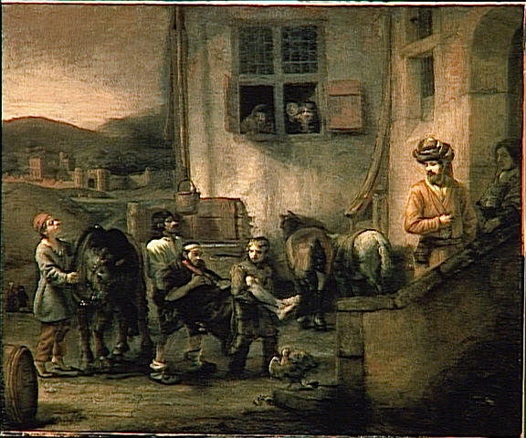

Wikimedia Commons · Public Domain
1973년 Darley & Batson은 프린스턴 신학교에서 실험을 했습니다. 학생들에게 「선한 사마리아인」 설교를 시키되, 절반은 "시간이 늦었습니다"라고 재촉했습니다. 길에 쓰러진 사람을 두고 — 시간 여유 있는 학생의 63%가 도왔지만, 쫓기는 학생은 10%만 도왔습니다.
2013년 경제학자 Mullainathan과 심리학자 Shafir는 이를 『Scarcity』 책으로 일반화했습니다. 시간 · 돈 · 인지 자원의 결핍은 인지 부담(bandwidth tax)을 키워 — 좋은 결정 · 친절한 행동의 여지를 좁힙니다. 슬랙(slack) — 즉 마음의 여유가 사람을 사람답게 만들어 줍니다.